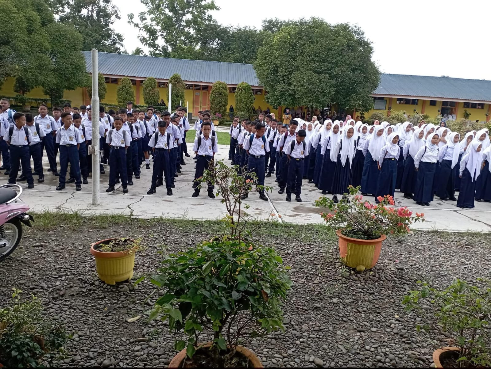

Kepala Sekolah
Assalamu'alaikum Warahmatullahi Wabarakatuh,
Salam Sejahtera
Puji syukur kita panjatkan ke hadirat Allah SWT atas segala rahmat dan karunia-Nya sehingga website resmi SMP Swasta YAPEKSI dapat hadir sebagai media informasi dan komunikasi bagi seluruh warga sekolah serta masyarakat.
Website ini dibuat untuk memberikan informasi mengenai profil sekolah, kegiatan, fasilitas, serta berbagai program yang dilaksanakan di SMP Swasta YAPEKSI. Kami berharap website ini dapat menjadi sarana yang bermanfaat dalam mendukung keterbukaan informasi dan mempererat hubungan antara sekolah, peserta didik, orang tua, dan masyarakat.
SMP Swasta YAPEKSI berkomitmen untuk terus meningkatkan kualitas pendidikan serta membentuk peserta didik yang beriman dan bertakwa kepada Tuhan Yang Maha Esa, berakhlak mulia, disiplin, mandiri, serta mampu berprestasi di bidang akademik maupun non-akademik.
Akhir kata, kami mengucapkan terima kasih atas dukungan dan kepercayaan yang diberikan kepada SMP Swasta YAPEKSI. Semoga website ini dapat memberikan manfaat bagi kita semua.
Wassalamu'alaikum Warahmatullahi Wabarakatuh
Om Shanti Shanti Shanti Om
Kepala Sekolah
SMP SWASTA YAPEKSI
SMP Swasta YAPEKSI merupakan sekolah yang berada di bawah naungan Yayasan Pendidikan Pancasila dan telah berdiri sejak tahun 1964. Berlokasi di Jl. Masjid Subulussalam, Kec. Sawit Seberang, Kab. Langkat. Sekolah ini dikenal dengan pendidikannya yang tinggi dan telah meraih Akreditas A dan berkomitmen memberikan pendidikan berkualitas, berkarakter, serta berprestasi....
Baca Selengkapnya